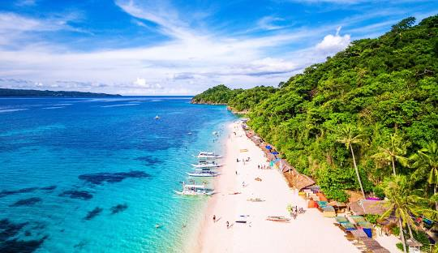
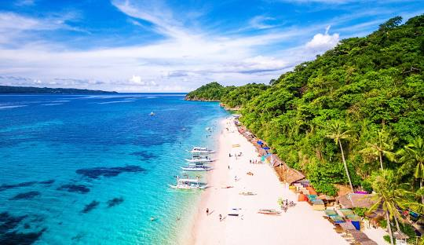

Visayas, Boracay
Boracay is my dream place because of its clear water, soft white sand, and beautiful sunsets. I want to relax on the beach, try fun water activities, and enjoy the island's lively atmosphere.
Flight
To plan a trip to Boracay from Quezon City, you'll need to fly to either Kalibo or Caticlan, then take a boat to the island. Consider flying to Kalibo (cheaper) or Caticlan (faster) and then a short boat ride to Boracay.
Other places to visit.
- Palawan – Known for its stunning beaches, crystal-clear lagoons, and rich marine life.
- Siargao – A paradise for surfers with beautiful islands, rock pools, and white sand beaches.
- Bohol – Famous for the Chocolate Hills, tarsiers, and beautiful beach resorts.
- Cebu – Offers historical sites, waterfalls, diving spots, and whale shark encounters.
- Baguio – A cool mountain city known as the "Summer Capital of the Philippines."
- Vigan – A well-preserved Spanish colonial town and a UNESCO World Heritage Site.
- Camiguin – An island province with volcanoes, hot springs, waterfalls, and white sand beaches.
- Davao – Home to Mount Apo, the highest peak in the Philippines, and the Philippine Eagle Center.